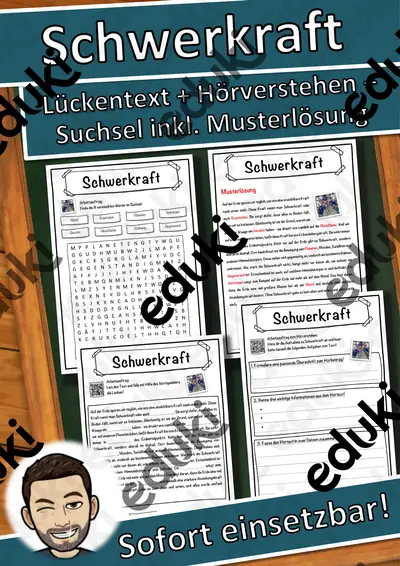

Kräfte und Bewegung: Arbeitsblätter für Klasse 6–10 (Physik)
Kräfte und Bewegung leiten zur klassischen Mechanik: Geschwindigkeit, Reibung, Schwerkraft und einfache Maschinen wie Hebel und Flaschenzug.
Die Begriffsliste dieser Einheit: Kraft, Geschwindigkeit, Reibung, Hebel, Flaschenzug und Gravitation.
Je nach Bundesland variiert die genaue Einordnung; üblich ist das Fach Physik in der Sekundarstufe I (Klasse 6–10). Die Schülerinnen und Schüler beschreiben Kräfte, berechnen Geschwindigkeiten und nutzen einfache Maschinen.
Für den Einstieg in Kräfte und Bewegung bieten sich Aufgaben zu Kraft an, zum Üben solche zu Geschwindigkeit und Reibung, zur Wiederholung vor einer Lernkontrolle ein Blick auf Gravitation. Die Lösungen liegen bei, sodass im Unterricht niemand nachschlagen muss. Die Prüfungstrainings bereiten gezielt auf Klassenarbeiten und Abschlussprüfungen vor.
10 passende Materialien stehen bereit, etwa Die Geschwindigkeit, Der Hebel und Kräfte. Vertreten sind 3 Prüfungstrainings und 7 Lückentexte mit Hörverstehen; die Stufen reichen über Klasse 5–8. Messungen mit Federkraftmesser und Rampe liefern Zahlen, die sich zu Gesetzmäßigkeiten ordnen.
Das gehört zum Thema
Passende Arbeitsblätter und Materialpakete

Die Geschwindigkeit – Prüfungstraining Physik (Klasse 8)

Der Hebel – Prüfungstraining Physik (Klasse 8)

Kräfte – Prüfungstraining Physik (Klasse 8)

Schwerkraft Lückentext mit Wortspeicher Hörverstehen und Suchsel

Hebel Lückentext mit Wortspeicher Hörverstehen und Suchsel

Geschwindigkeit Lückentext mit Wortspeicher Hörverstehen und Suchsel

Flaschenzug Lückentext mit Wortspeicher Hörverstehen und Suchsel

Kraft Lückentext mit Wortspeicher Hörverstehen und Suchsel

Isaac Newton Lückentext mit Wortspeicher Hörverstehen und Suchsel

Beschleunigung Lückentext mit Wortspeicher Hörverstehen und Suchsel
Häufige Fragen
Für welche Klassenstufe passen die Arbeitsblätter zu Kräfte und Bewegung?
Der Schwerpunkt liegt auf Klasse 6; insgesamt deckt die Auswahl (10 Titel) Klasse 5–8 ab. In der Beschreibung jedes Materials steht die empfohlene Stufe.
Welche Inhalte decken die Materialien zu Kräfte und Bewegung ab?
Inhaltlich reicht die Auswahl von Kraft über Geschwindigkeit und Reibung bis zu Flaschenzug; Details stehen bei den einzelnen Materialien.
Wie setze ich Kräfte und Bewegung im Unterricht ein?
Messungen mit Federkraftmesser und Rampe liefern Zahlen, die sich zu Gesetzmäßigkeiten ordnen. Danach genügt meist ein Material als Einstieg und eines zum Üben.
Mehr Material nach Fach und Klasse
- Alle Materialien Deutsch
- Arbeitsblätter Deutsch Klasse 6
- Arbeitsblätter Deutsch Klasse 7
- Arbeitsblätter Deutsch Klasse 8
- Arbeitsblätter Deutsch Klasse 9
- Arbeitsblätter Deutsch Klasse 10
- Unterrichtsmaterial Klasse 6
- Unterrichtsmaterial Klasse 7
- Unterrichtsmaterial Klasse 8
- Unterrichtsmaterial Klasse 9
- Unterrichtsmaterial Klasse 10
Verwandte Lehrplanthemen
- Licht und Optik (Physik, Klasse 5–9)
- Schall und Akustik (Physik, Klasse 5–9)
- Wärme und Energieformen (Physik, Klasse 5–10)
- Strom und Stromkreis (Physik, Klasse 3–8)